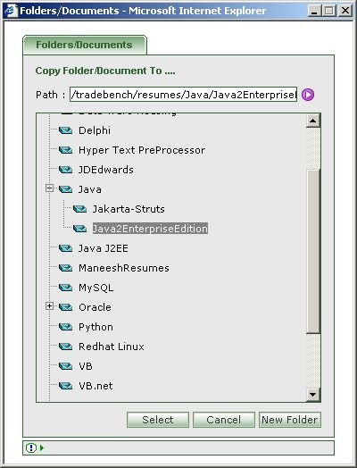

|

|
- First select the folder,document,resume or timesheet you would like to copy.
- You can select multiple folder,document,resume or timesheet.
- Click on the 'Copy To' icon [ ].
- Select the folder where you would like to Copy the selected items.
- Press 'Select' to copy the selected items to the selected Folder.
- Press 'Cancel' to abort copying.
- Press 'New Folder' to create New Folder.
|